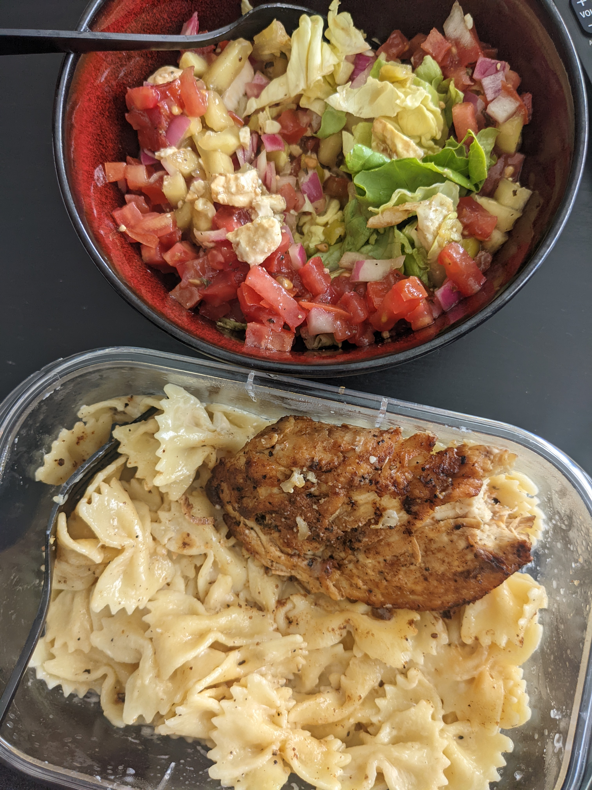

About
This website has been created for a project in WebTech at Babson College. For this project, I've utilized what I've learned in terms of HTML and CSS to create my own recipe site, where I share various recipes that I enjoy making for breakfast, lunch, dinner, snacks, and desserts. Each recipe includes any backstory I have on each recipe (ie who I got it from or my experiences with it) as well as the ingredients and instructions needed to prepare it.
What is the objective of the website?
This summer, I am living with my partner and we have been enjoying grocery shopping, meal prepping, and cooking new foods together. Every week, we come together to decide on our meals for the next week, and it would be very helpful to have somewhere to keep all of our recipes for reference when meal planning. It will also be a really fun way to document our adventures cooking together, in addition to its practical function.
Who is your target audience?
The primary audience for this website is myself and my partner, Christian. We will be using this site weekly to determine our meals. But, I often talk with friends about what I cook or post it on social media, so I can also direct people to this site when they inquire on how to cook a certain dish.

This website includes the following:
- Homepage: a quick overview of the purpose of the site, along with some aesthetic images of the food we've made.
- Recipes (AKA Sitemap): a directory for all pages
- Recipes Pages: each page will have a list of categories including individual recipes that fit under that category. I will create at least one per cateogry by the project deadline.
- Quick Reference Page: includes things I may forget that would be helpful in making recipes, like conversions, general rules, substitute products, etc.